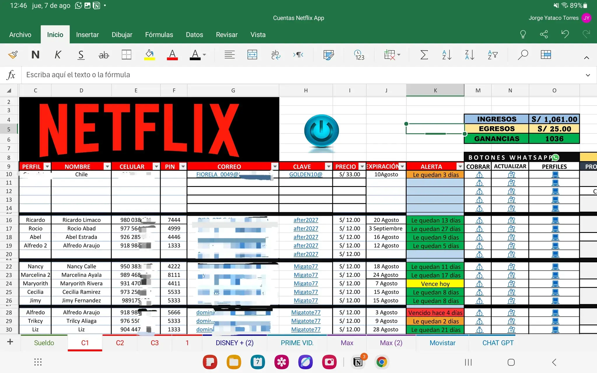

Sistema de gestión y automatización en Excel para el control de cuentas premium, clientes, vencimientos y comunicación directa por WhatsApp.
← Volver al portafolio Ingenia Entretenimiento es un proyecto digital enfocado en la venta y administración de cuentas premium de plataformas de streaming como Netflix, Disney+, Prime Video, HBO Max, IPTV, entre otras. Mi principal aporte fue la construcción completa de un sistema inteligente en Excel que permite controlar clientes, pagos, vencimientos y comunicación de forma automatizada.
Se diseñaron tablas estructuradas para el registro detallado de cada cliente, integrando datos como nombre, número de celular, plataforma contratada, correo, PIN de acceso, precio pagado y fecha de vencimiento.
Estas tablas fueron convertidas en tablas dinámicas, permitiendo filtrar información por plataforma, estado de cuenta, fechas y clientes activos o vencidos, facilitando una toma de decisiones rápida y eficiente.
Se desarrolló un dashboard visual conectado directamente a las tablas de datos, mostrando indicadores clave como:
Todo el dashboard se actualiza automáticamente al ingresar nueva información, eliminando procesos manuales y errores.
Se implementó un sistema de alertas por vencimiento que calcula automáticamente los días restantes de cada cuenta, utilizando fórmulas condicionales y formato visual por colores:
Esto permite anticiparse a renovaciones y mejorar la continuidad del servicio.
Se desarrolló una hoja de Excel inteligente con botones automatizados que permiten una comunicación directa con los clientes vía WhatsApp.
Mediante enlaces dinámicos, el sistema permite:
Cada botón está conectado al número registrado del cliente, optimizando el tiempo de atención y mejorando la experiencia del usuario.
Este proyecto demuestra el uso de Excel como una herramienta potente de gestión, automatización y análisis, aplicable a negocios digitales, control de clientes y toma de decisiones basada en datos.